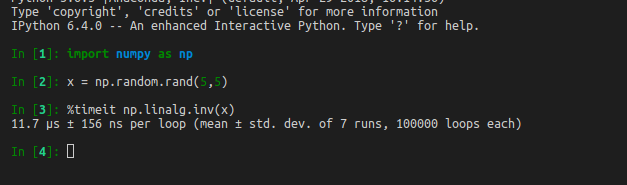

Make总结
Posted on Wed 28 February 2024 in Programming • Tagged with make
Make
Make是常见的构建工具，按照文件中写好的规则进行构建. Make命令放在一个Makefile的文件中，你也可以通过make -f rules.txt指定其 …
Continue reading
Posted on Wed 28 February 2024 in Programming • Tagged with make
Make是常见的构建工具，按照文件中写好的规则进行构建. Make命令放在一个Makefile的文件中，你也可以通过make -f rules.txt指定其 …
Posted on Wed 28 February 2024 in Programming • Tagged with python
You can use timeit in IPython to time the statement.

Say you have following python code:
import numpy as np
def solve():
x = np.random.rand …Posted on Sun 21 October 2018 in Programming • Tagged with design pattern
Posted on Sun 21 October 2018 in Programming • Tagged with python
Posted on Sat 20 October 2018 in Programming • Tagged with pelican, blog
pip install pelicanpip install Markdownpelican-quickstart to build a quick start version project pip install typogrifyblog metadata
Title: My title
Date: 2010-12-03 10 …Posted on Sat 20 October 2018 in Math • Tagged with matrix, calculus
Posted on Sun 14 October 2018 in Programming • Tagged with markdown
Posted on Sun 14 October 2018 in Programming • Tagged with binary search, algorithm
Posted on Sun 14 October 2018 in Math • Tagged with statistics